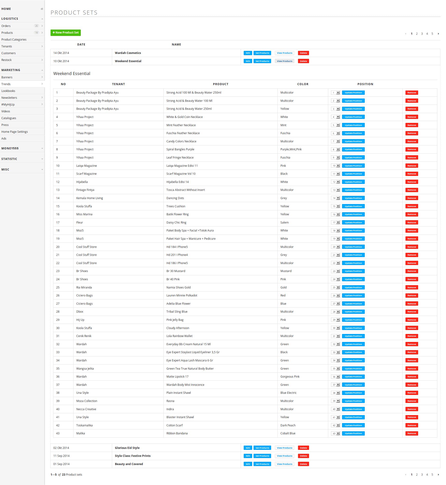
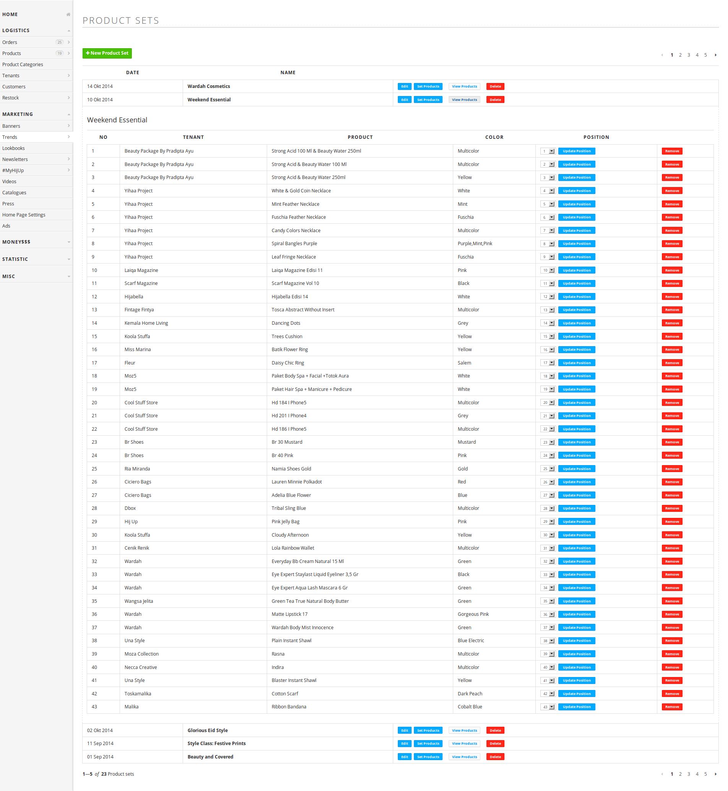

HijUp
View siteHijUp.com is the world’s first Muslim fashion e-commerce. Starting in 2011, it has grown to host more than fifty brands and serve many customers worldwide.
I was the only front-end engineer for HijUp from 2012 to 2014. Because the team was small, I also took care of the information architecture, user experience design, and a small part of the visual design.
HijUp was doing a major rewrite in 2013. We hoped that HijUp would grow even more, so for this rewrite, we tried to make the code base well-structured instead of just piling up features.
- Separating the code for the buyer pages and administrator dashboard pages. These parts of the website have different purposes, yet they were not coded separately. This separation makes it easier to update each part independently.
- Using a component-based approach for writing CSS. Component-based CSS makes it easier to build a web page rapidly.
- Implementing module-based JavaScript. The module system was not yet standard for the front-end at that time. Modules make the code more organized and improve reusability.
We believe that these efforts would make maintenance and adding new features easier. After working for a few months, we were pretty successful. The website ran smoothly, and the development experience was improved.
HijUp Product Page
HijUp Shopping Cart

HijUp Mobile Site

HijUp Admin Dashboard


 
